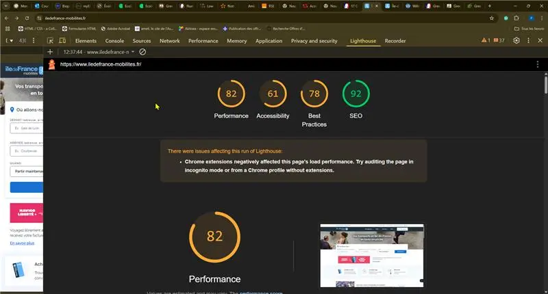

Présentation du service
La fonctionnalité "Trajet" permet aux usagers de planifier un déplacement en transports en commun en Île-de-France. Elle fournit les itinéraires, horaires et alternatives disponibles en fonction de la localisation, de la date et de l’heure.
ODD associé : Objectif 11 – Villes et communautés durables
Audit de conception responsable
Points forts
- Design responsive (mobile first)
- Utilisation de lazy loading pour certaines images
- URL lisibles et sans accents
- Contraste globalement suffisant
- Navigation cohérente avec utilisation d’ancres
Points à améliorer
- Présence de styles en ligne dans certains éléments : préférer les fichiers CSS externes minifiés
- Police non spécifiquement adaptée à la lecture écran (police à empattement par endroits)
- Images redimensionnées à la volée plutôt que pré-traitées
- Structure HTML : sauts de titres non cohérents (ex. :
<h1>suivi directement de<h3>) - Zoom parfois désactivé sur mobile
Recommandations
- Revoir la hiérarchie des titres pour respecter la logique
<h1><h2><h3> - Optimiser toutes les images (taille fixe) et activer systématiquement le lazy loading
- Supprimer les styles en ligne et consolider le CSS dans un fichier unique minifié
- Adapter la typographie pour améliorer la lisibilité (sans empattement)
- Réactiver le zoom utilisateur pour une meilleure accessibilité
Résultat de l’audit Lighthouse

Résultat de l’audit GreenIT

Informations complémentaires
- Score Lighthouse : accessibilité 86, performance 74, bonnes pratiques 92
- Score Ecolindex : C
- Outils utilisés : Lighthouse, Ecoindex, Web.dev measure